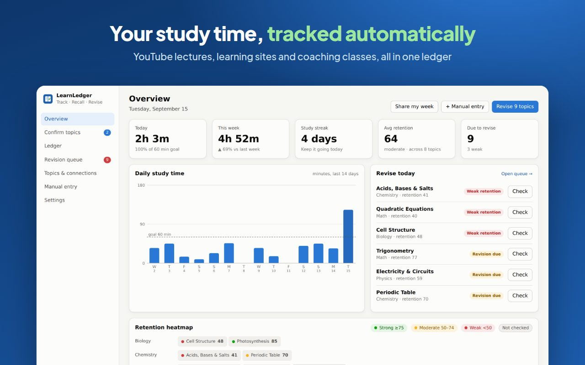
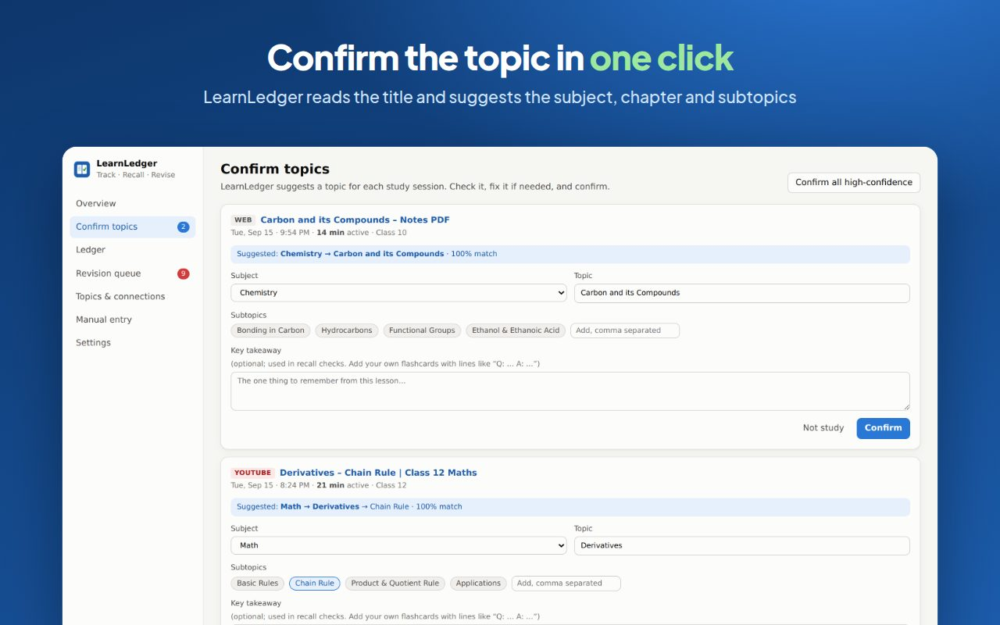
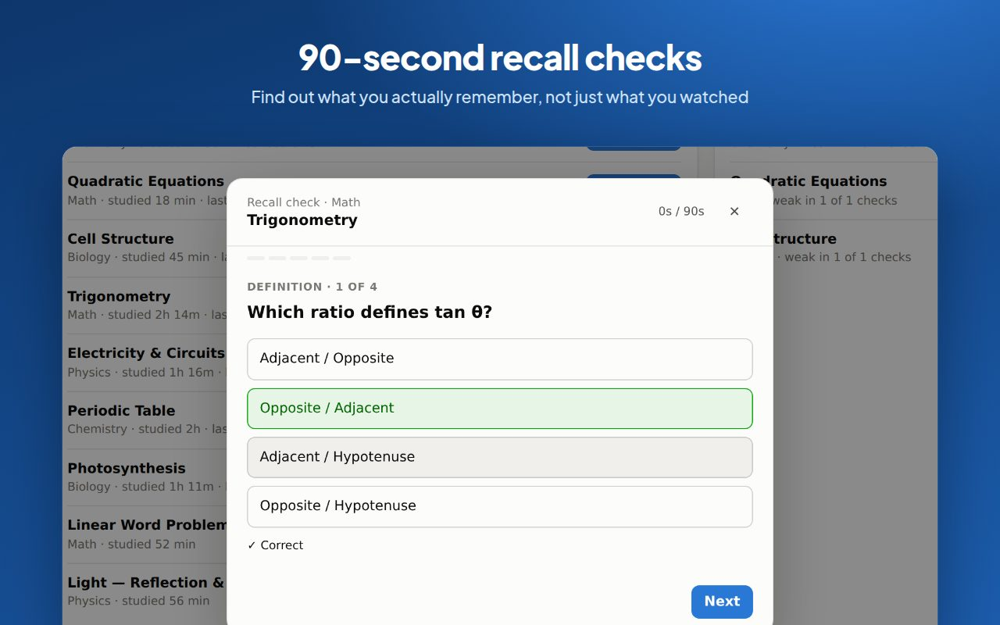
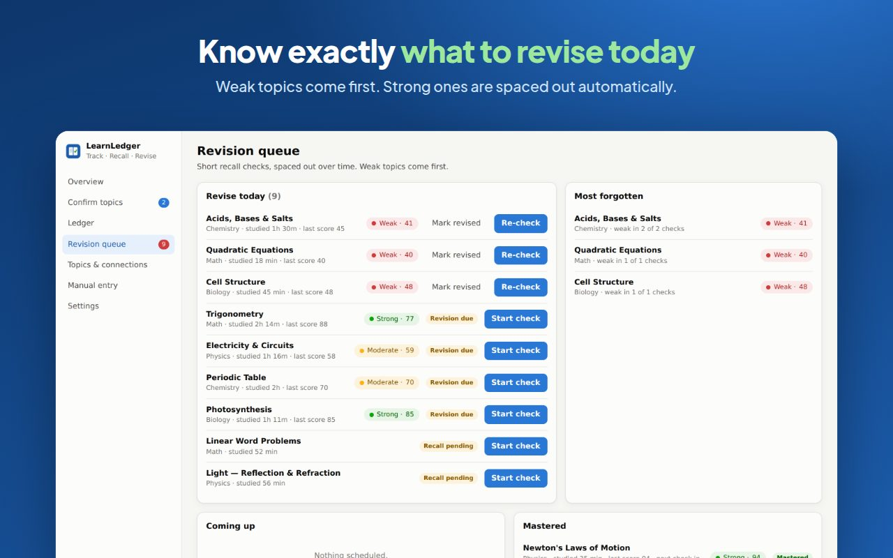
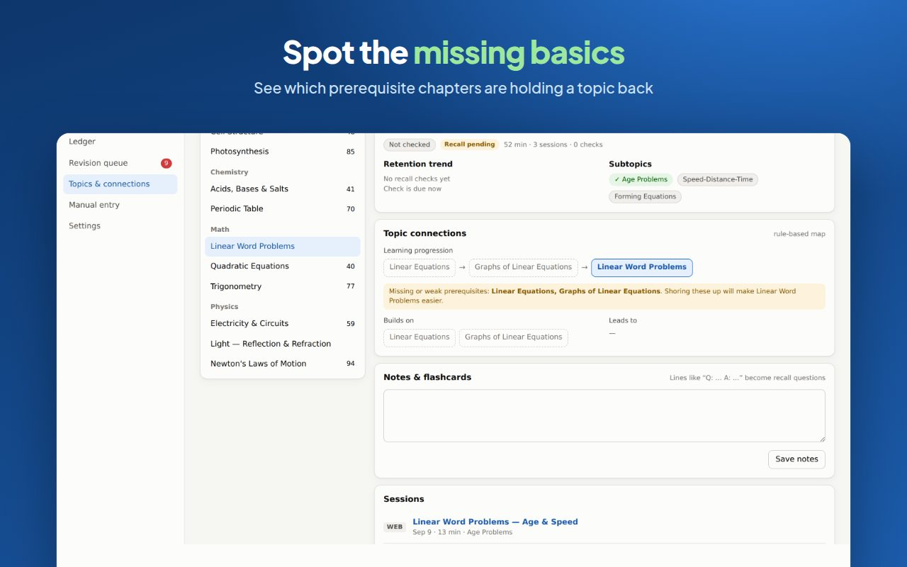
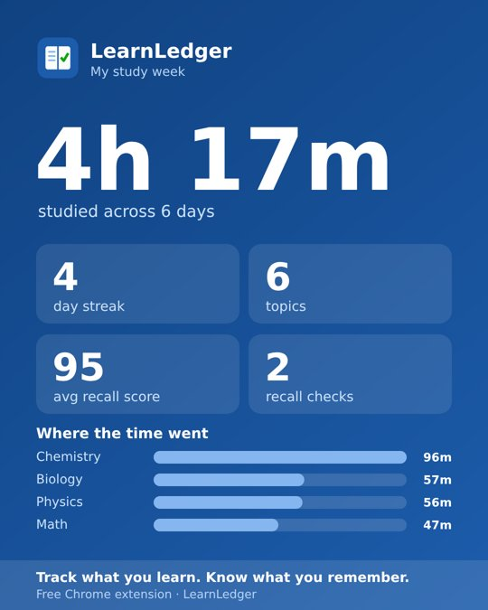

Padha kitna?Yaad kitna?
You study for hours on YouTube, coaching apps and NCERT PDFs. LearnLedger keeps a record of what you studied, checks what you still remember, and tells you what to revise next.
Your study is spread over five apps, and none of them remembers it for you.
Four hours watched. Which chapters? No idea.
Notes across notebooks, no single list of what's covered.
You read it. Would you remember it in the exam?
You end up guessing what to revise, again.
Study as usual. LearnLedger takes it from there.
Watch or read
Study on YouTube, PW, Khan Academy, BYJU'S, NCERT or 30+ other sites. Only active time counts: a paused video or an idle tab doesn't.

Confirm the chapter
It reads the lesson title and suggests the subject, chapter and subtopics, for example Maths → Trigonometry → Ratios. One click to confirm.

Recall, then revise
An hour later, and again a day later, take a quick check of 3–4 questions. Weak chapters move to the top of your revision list.

A record of your learning, and a plan for what to revise next.
Every session, logged
Date, source, chapter, subtopics, time spent and your recall score, in one searchable list you can export to CSV.
Strong · Moderate · Weak
Each chapter gets a score from 0 to 100 based on your recall answers and how confident you felt.
Spaced revision
Strong chapters come back in 1, 3, 7, 14, then 30 days. Weak ones come back straight away.
Find missing basics
Struggling with word problems? It shows whether Linear Equations and Graphs need work first.
Coaching & books
Log offline classes, PDFs and practice sessions, so your ledger covers all your study.
Your own questions
Write "Q: … A: …" in your notes and those lines become recall questions.
Know what to revise today.



Post your week, not your screen time.
Make a weekly card for your WhatsApp status or Instagram story in one tap. It shows totals only: no names, no sites, no video titles. It's a good way to keep a study group going.
Your study data stays on your laptop.
LearnLedger has no servers and no accounts. It reads a page's title, never its content, and saves everything in your browser. Parents can check the privacy policy.
- No sign-up, email or phone number
- No ads, analytics or tracking scripts
- Social, mail and streaming sites are never tracked
- Pause anytime, export or delete everything in one click
The sites you already study on.
Brand names belong to their owners. LearnLedger is an independent tool and isn't affiliated with these sites.
FAQ
Is it really free?
Yes. There's no paid plan, no trial and no ads. LearnLedger runs entirely on your computer, so it costs nothing to run.
Does it work on my phone?
Not yet. It's a browser extension for Chrome, Edge and Brave on laptops and desktops. Phone study can be added as a manual entry.
Will it track my Instagram or games?
No. It only reads study sites and videos that look like lessons. Social media, mail and streaming sites are ignored. You can also pause tracking or ignore any site.
Where do the quiz questions come from?
LearnLedger has built-in questions for common CBSE, JEE and NEET chapters. For any other topic it asks you to recall the key idea, and it uses the Q/A flashcards you write.
What happens to my data if I uninstall?
Chrome deletes it. Export a backup from Settings first if you want to keep your ledger.
I'm a teacher or coaching centre. Can I use it with my students?
Yes. Students can share their weekly card or export their ledger. Class dashboards are on the roadmap; get in touch if you'd like to pilot them.
Stop guessing what
to revise.
Add LearnLedger to Chrome
Free · No login · Takes 10 seconds